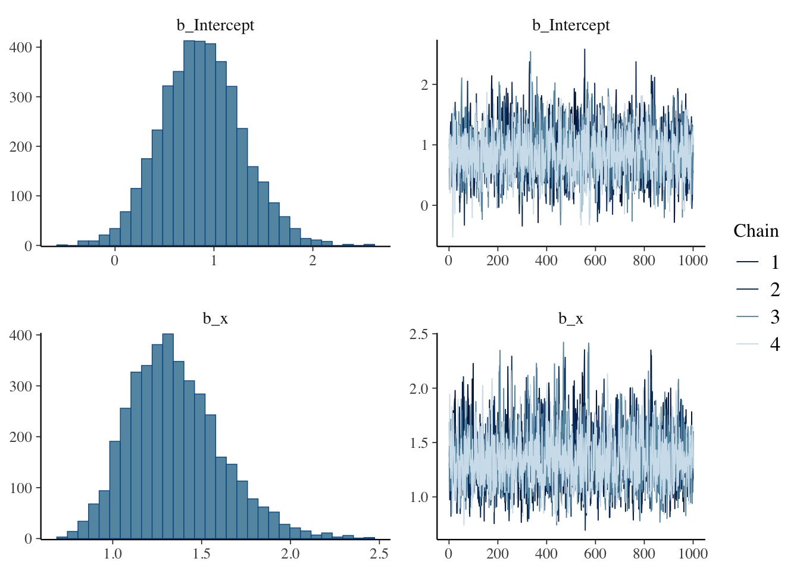
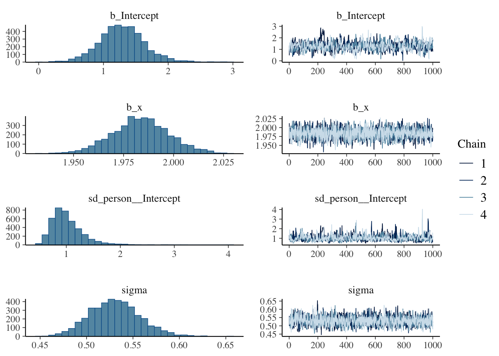
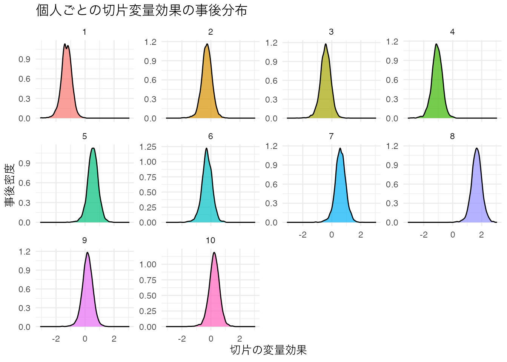
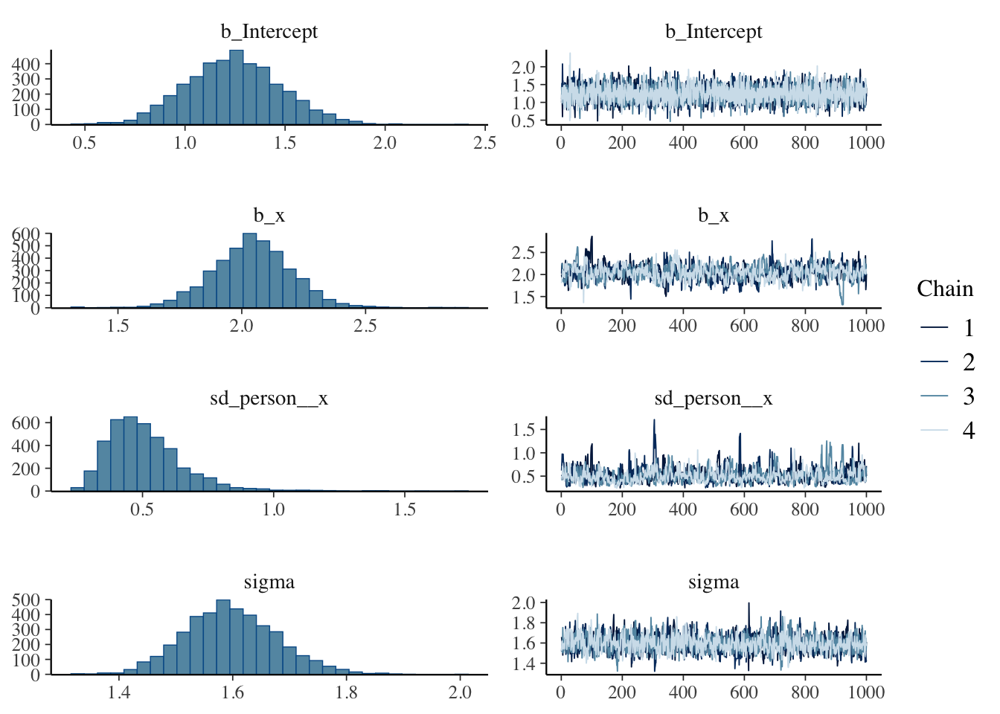
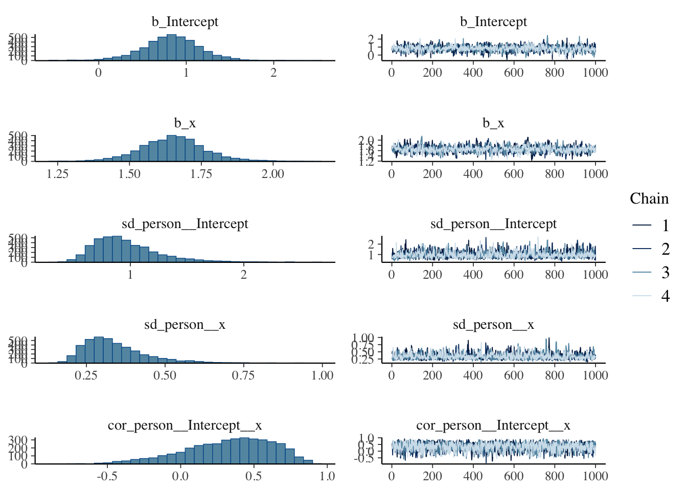
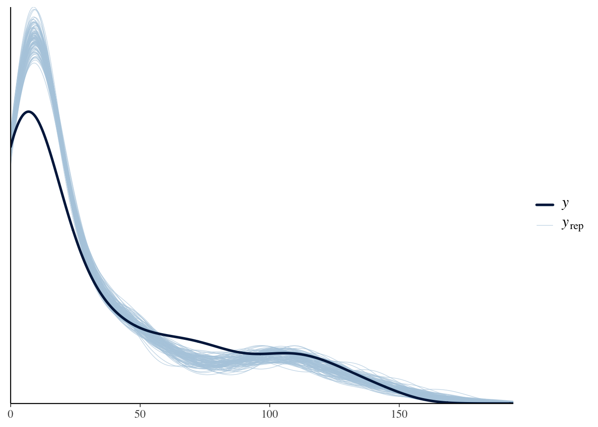

13 線形モデルの展開
この章では，線形モデルの展開を説明する。線形モデルは，説明変数と目的変数の関係を線形すなわち一次式で表現するモデルである。 線形モデルは，一般化線形モデル(GLM)，一般化線形混合モデル(GLMM)，階層線形モデル(HLM)と拡張していくが，まずは一般線形モデル(LM)についてみておこう。
13.1 一般線形モデル(General Linear Model)
線形モデルの基本は回帰分析モデルである。単回帰モデルは次の式で表される。
\[ y_i = \beta_0 + \beta_1 x + e_i \]
ここで，\(y_i\)は\(i\)番目の観測値，\(\beta_0\)は切片，\(\beta_1\)は回帰係数，\(e_i\)は誤差項である。 この式を拡張したのが重回帰分析で，次の式で表される。
\[ y_i = \beta_0 + \beta_1 x_1 + \beta_2 x_2 + \cdots + \beta_p x_p + e_i \]
ここで，\(x_1, x_2, \cdots, x_p\)は説明変数，\(\beta_1, \beta_2, \cdots, \beta_p\)は回帰係数である。
この式をベクトルと行列で表現すると，次のようになる。
\[ y = X\beta + e \]
ここで，\(y\)は\(n\)次元のベクトル，\(X\)は\(n \times p\)の計画行列(design matrix)，\(\beta\)は\(p\)次元のベクトル，\(e\)は\(n\)次元のベクトルである。
計画行列は，説明変数のデータをまとめた行列であり，次のようになる。
\[ X = \begin{pmatrix} 1 & x_1 & x_2 & \cdots & x_p\\ 1 & x_1 & x_2 & \cdots & x_p\\ \vdots & \vdots & \vdots & \ddots & \vdots\\ 1 & x_1 & x_2 & \cdots & x_p \end{pmatrix} \]
第一列目にあるのは切片にかかる係数であり，第二列目以降にあるのは説明変数にかかる係数である。 ここに係数ベクトル\(\beta= (\beta_0, \beta_1, \beta_2, \cdots, \beta_p)^T\)をかけることで，説明変数の線形結合が得られる。
この係数ベクトルにおいて，\(x\)の値がバイナリ(0/1)の場合，その説明変数はダミー変数と呼ばれる。線型回帰モデルにおいて説明変数\(X\)がダミー変数である場合は，横軸が2つの値しかとらないため散布図を描くと奇妙な形になることがわかるだろう。
この散布図に対して回帰直線を引けば，2群の平均値を通る直線が引かれる。回帰分析においては，予測式\(\hat{y}\)を中心とした正規分布に従って誤差が生じると仮定されているのであった。ダミーデータの場合も，両群の平均値を中心に正規分布に従って誤差が生じると仮定したことになる。これはいわゆる2群の平均値の差を検定する時の仮定と同じであり，このことから平均値差の検定は説明変数が名義尺度水準の変数である回帰分析と同じ(一般)であることがわかる。回帰分析と平均値差の検定は数学的には同じ式で表現できるから，これを総称して一般線型モデルGeneral Linear model という。
13.2 一般化線形モデル(GLM)
かつて心理学実践においては，要因計画法と帰無仮説検定の組み合わせによって研究を行うことが主流であった。平均値差の検定に落とし込むように研究をデザインし，帰無仮説検定でYESかNOか決着がつく。帰無仮説検定はデータの特性や生成メカニズムに依存せず，統計パッケージを用いれば誰にでも扱うことができ，\(p\)値という手垢のついてない数値だけで判断できると考えられてきた。
このことに関する問題については置くとして，ともかく「正規分布の平均値の差」に持ち込めさえすれば良い，ということが当時の研究者の共通認識であった。そのため，例えば比率のデータやカウントデータなど，正規分布を想定することができないデータに対しても，対数変換・角変換などを行って分布を正規分布のそれに近づけ，検定を行うということが行われていた。
正規分布は理論的に\(\pm \infty\)の範囲を取るのに対し，比率のデータは0から1の範囲にしかとらない。カウントデータは正の整数しかとらないデータであるから，こうしたデータに対して一般線型モデルをあてがうのは重大な仮定違反である1。
このような背景から，正規分布以外の確率分布を用いた統計モデルが考えられた。これが一般化線形モデル(Generalized Linear Model, GLM)である2。
確率分布の多くは，位置パラメータとスケールパラメータを持つ。統計モデルは平均的な挙動について考えるモデルだから，位置パラメータに線形モデルが当てがえるように，数式を変形してやれば良い。以下に例として，ベルヌーイ分布とポアソン分布をGLMで表現したものを考えてみよう。
13.2.1 ベルヌーイ分布に対する線形モデル；ロジスティック回帰分析
ベルヌーイ分布はコイントスの表/裏のような2値をとるデータに対して用いられる。ベルヌーイ分布の確率関数は次のように表される。
\[ P(Y = y) = p^y (1-p)^{1-y} \]
ここで，\(p\)は成功確率であり，0から1の範囲の値を取る。 こうしたデータは現実にも少なくない。生死，病気の有無，テストの正答/誤答のようなデータが代表的である。こうしたデータを目的変数にして，直線回帰を行うと当然おかしなことが生じる。すなわち，予測値が0と1の範囲を超えることがありえるからである。
そこで，線形予測子と確率を適切に結びつけるリンク関数を用いる。ロジスティック回帰ではロジット関数（logit function）をリンク関数として使用する：
\[ \text{logit}(p) = \log\left(\frac{p}{1-p}\right) = \beta_0 + \beta_1 x \]
この関係を\(p\)について解いてみよう。\(\eta = \beta_0 + \beta_1 x\)とおくと：
\[ \log\left(\frac{p}{1-p}\right) = \eta \]
両辺の指数を取ると：
\[ \frac{p}{1-p} = e^{\eta} \]
両辺に\((1-p)\)をかけると：
\[ p = (1-p) \cdot e^{\eta} \]
展開すると：
\[ p = e^{\eta} - p \cdot e^{\eta} \]
\(p\)について整理すると：
\[ p + p \cdot e^{\eta} = e^{\eta} \]
\[ p(1 + e^{\eta}) = e^{\eta} \]
\[ p = \frac{e^{\eta}}{1 + e^{\eta}} \]
分子分母を\(e^{\eta}\)で割ると：
\[ p = \frac{1}{e^{-\eta} + 1} = \frac{1}{1 + e^{-\eta}} \]
\(\eta = \beta_0 + \beta_1 x\)を代入すると，ロジスティック関数（逆リンク関数）が得られる：
\[ p = \frac{1}{1 + e^{-(\beta_0 + \beta_1 x)}} \]
このようにして得られた確率を用いて，ベルヌーイ分布の確率関数を次のように表現できる。
\[ y \sim \text{Bernoulli}(p) \]
サンプルデータを作って，線形回帰モデルとロジスティック回帰モデルの予測値を比較してみよう。
pacman::p_load(tidyverse)
pacman::p_load(patchwork)
# データ生成
set.seed(17)
n <- 200
x <- runif(n, min = -10, max = 10)
beta_0 <- 1
beta_1 <- 2
p <- beta_0 + x * beta_1
prob <- 1/(1+exp(-p))
y <- rbinom(n, size = 1, prob = prob)
df_logistic <- data.frame(x = x, y = y)
# p1: 線形回帰
p1 <- ggplot(df_logistic, aes(x = x, y = y)) +
geom_point(alpha = 0.7, size = 2) +
geom_smooth(method = "lm", se = FALSE, color = "blue") +
theme_minimal() +
labs(x = "説明変数", y = "目的変数", title = "線形回帰") +
theme(text = element_text(family = "IPAexGothic"))
# p2: ロジスティック回帰
p2 <- ggplot(df_logistic, aes(x = x, y = y)) +
geom_point(alpha = 0.7, size = 2) +
geom_smooth(method = "glm", method.args = list(family = "binomial"), se = FALSE, color = "red") +
theme_minimal() +
labs(x = "説明変数", y = "目的変数", title = "ロジスティック回帰") +
theme(text = element_text(family = "IPAexGothic"))
# パッチワークで結合
p1 + p2線形回帰の予測値が不適切な範囲にまで延伸するのに対し，ロジスティック回帰はうまく適合していることがわかるだろう。
データからロジスティック回帰モデルを推定するには，glm関数を用いることができるが，ここではすでに学んだbrmsパッケージによるベイズ推定でアプローチしてみよう。brm関数の書き方は，glm関数の書き方とほぼ同じであり，推定法をMLからベイズに変えることできる。
pacman::p_load(brms)
result.bayes.logistic <- brm(
y ~ x,
family = bernoulli(),
data = df_logistic,
seed = 12345,
chains = 4, cores = 4, backend = "cmdstanr",
iter = 2000, warmup = 1000,
refresh = 0
)Running MCMC with 4 parallel chains...
Chain 1 finished in 0.0 seconds.
Chain 2 finished in 0.0 seconds.
Chain 3 finished in 0.0 seconds.
Chain 4 finished in 0.0 seconds.
All 4 chains finished successfully.
Mean chain execution time: 0.0 seconds.
Total execution time: 0.2 seconds.summary(result.bayes.logistic) Family: bernoulli
Links: mu = logit
Formula: y ~ x
Data: df_logistic (Number of observations: 200)
Draws: 4 chains, each with iter = 2000; warmup = 1000; thin = 1;
total post-warmup draws = 4000
Regression Coefficients:
Estimate Est.Error l-95% CI u-95% CI Rhat Bulk_ESS Tail_ESS
Intercept 0.88 0.41 0.10 1.70 1.00 2314 2331
x 1.35 0.26 0.91 1.92 1.00 2164 2080
Draws were sampled using sample(hmc). For each parameter, Bulk_ESS
and Tail_ESS are effective sample size measures, and Rhat is the potential
scale reduction factor on split chains (at convergence, Rhat = 1).plot(result.bayes.logistic)
## 比較のためにML推定も行っておく
result.ml <- glm(y ~ x, family = binomial(), data = df_logistic)
summary(result.ml)
Call:
glm(formula = y ~ x, family = binomial(), data = df_logistic)
Coefficients:
Estimate Std. Error z value Pr(>|z|)
(Intercept) 0.8673 0.4058 2.137 0.0326 *
x 1.2661 0.2413 5.248 1.54e-07 ***
---
Signif. codes: 0 '***' 0.001 '**' 0.01 '*' 0.05 '.' 0.1 ' ' 1
(Dispersion parameter for binomial family taken to be 1)
Null deviance: 273.869 on 199 degrees of freedom
Residual deviance: 45.112 on 198 degrees of freedom
AIC: 49.112
Number of Fisher Scoring iterations: 8最尤推定の結果とベイズ推定の結果に多少のズレが見られるが，これはサンプルサイズの小ささによるものである。アウトプット変数が2値しか持たないため，分散がどうしても小さくなりがちであり，正確な推定値を得るためにはより多くのデータが必要である。
また，回帰係数の解釈には注意が必要である。普通の回帰分析であれば，説明変数が1単位変わると目的変数がどれだけ変わるかを表すが，ロジスティック回帰ではこのような直接的な解釈はできない。ロジスティック関数によって変換されたものが意味を持つからである。
線形モデルが表すのは次の関係なのであった。 \[ \beta_0 + \beta_1 x = \log \frac{p}{1-p} \]
この\(\log \frac{p}{1-p}\)はロジット(logit)と呼ばれる。ロジスティック回帰では，確率\(p\)をロジットに変換することで線形関係を表現している。逆に言えば，線形モデルで表現されているのはログを取った確率の比であり，この比が説明変数の線形関係によって決まるということである。であるから，結果を解釈するには係数を指数関数\(e\)を取り，確率の比として理解する必要がある。
今回のデータでは説明変数の係数が1.36と推定されたから，\(e^{1.36} = 3.89\)である。これは，説明変数が1単位増加すると，成功確率が3.89倍になる，ということを意味する。
13.2.2 ポアソン分布に対する線形モデル；ポアソン回帰
今度はカウント変数に対するモデルを考えてみよう。カウント変数は正の整数をとるデータであり，ポアソン分布を用いることができる。ポアソン分布の確率関数は次のように表される。
\[ P(Y = y) = \frac{\lambda^y e^{-\lambda}}{y!} \]
ここで，\(\lambda\)は平均である。ポアソン分布の形状も確認しておこう。
このような正の整数しかとらないデータに対してはポアソン分布で回帰した方がよい。ポアソン回帰では対数関数をリンク関数として使用する：
\[ \log(\lambda_i) = \beta_0 + \beta_1 x_i \]
この関係を\(\lambda_i\)について解くと，指数関数（逆リンク関数）が得られる：
\[ \lambda_i = \exp(\beta_0 + \beta_1 x_i) \]
として
\[ y_i \sim \text{Pois}(\lambda_i) \]
を考えるのである。
以下にサンプルデータを作ったポアソン回帰の例を示す。
# データ生成
set.seed(17)
n <- 200
x <- runif(n, min = 0, max = 10)
beta_0 <- 0.5
beta_1 <- 0.3
lambda <- exp(beta_0 + beta_1 * x)
y <- rpois(n, lambda = lambda)
df_pois <- data.frame(x = x, y = y)
# p1: 線形回帰（不適切な例）
p1 <- ggplot(df_pois, aes(x = x, y = y)) +
geom_point(alpha = 0.7, size = 2) +
geom_smooth(method = "lm", se = FALSE, color = "blue") +
theme_minimal() +
labs(x = "説明変数", y = "カウント変数", title = "線形回帰（不適切）") +
theme(text = element_text(family = "IPAexGothic"))
# p2: ポアソン回帰（適切な例）
p2 <- ggplot(df_pois, aes(x = x, y = y)) +
geom_point(alpha = 0.7, size = 2) +
geom_smooth(method = "glm", method.args = list(family = "poisson"), se = FALSE, color = "red") +
theme_minimal() +
labs(x = "説明変数", y = "カウント変数", title = "ポアソン回帰（適切）") +
theme(text = element_text(family = "IPAexGothic"))
# パッチワークで結合
p1 + p2線形回帰では負の値の予測値が出てしまう可能性があるのに対し，ポアソン回帰は指数関数による変換によって適切にカウントデータの特性を捉えていることがわかる。
ポアソン回帰を実行するRコードの例を次に示す。
result.bayes.pois <- brm(
y ~ x,
family = poisson(),
data = df_pois,
seed = 12345,
chains = 4, cores = 4, backend = "cmdstanr",
iter = 2000, warmup = 1000,
refresh = 0
)Running MCMC with 4 parallel chains...
Chain 1 finished in 0.0 seconds.
Chain 2 finished in 0.0 seconds.
Chain 3 finished in 0.0 seconds.
Chain 4 finished in 0.0 seconds.
All 4 chains finished successfully.
Mean chain execution time: 0.0 seconds.
Total execution time: 0.2 seconds.summary(result.bayes.pois) Family: poisson
Links: mu = log
Formula: y ~ x
Data: df_pois (Number of observations: 200)
Draws: 4 chains, each with iter = 2000; warmup = 1000; thin = 1;
total post-warmup draws = 4000
Regression Coefficients:
Estimate Est.Error l-95% CI u-95% CI Rhat Bulk_ESS Tail_ESS
Intercept 0.49 0.07 0.36 0.63 1.00 1275 1675
x 0.30 0.01 0.29 0.32 1.00 1471 1943
Draws were sampled using sample(hmc). For each parameter, Bulk_ESS
and Tail_ESS are effective sample size measures, and Rhat is the potential
scale reduction factor on split chains (at convergence, Rhat = 1).plot(result.bayes.pois)## 比較のためにML推定も行っておく
result.ml.pois <- glm(y ~ x, family = poisson(), data = df_pois)
summary(result.ml.pois)
Call:
glm(formula = y ~ x, family = poisson(), data = df_pois)
Coefficients:
Estimate Std. Error z value Pr(>|z|)
(Intercept) 0.495962 0.071166 6.969 3.19e-12 ***
x 0.304829 0.009555 31.902 < 2e-16 ***
---
Signif. codes: 0 '***' 0.001 '**' 0.01 '*' 0.05 '.' 0.1 ' ' 1
(Dispersion parameter for poisson family taken to be 1)
Null deviance: 1457.6 on 199 degrees of freedom
Residual deviance: 214.3 on 198 degrees of freedom
AIC: 975.04
Number of Fisher Scoring iterations: 413.3 一般化線形混合モデル(GLMM)
線形モデルのさらなる拡張として，一般化線形混合モデル(GLMM)Generalized Linear Mixed Modelがある。ここまでの回帰モデルは，説明変数が目的変数に対して一貫した効果を持つと仮定してきた。この効果を特に固定効果fixed effectというが，GLMMでは固定効果に加えて変量効果random effectを考慮することができる。
変量効果とは，説明変数が個体ごとに異なる値を持つことを意味する。たとえばWithinデザインの要因計画は個人差を考慮することができるが，これは変量効果を考慮したモデルであるといえる。すなわち，研究として見たい効果はWithin要因の水準ごとの固定効果であり，これとは別に個人の平均値が異なることを想定しているから，個人ごとの平均値を変量効果として考慮しているモデルといえる。
このように変量効果は個人ごとに異なる影響を考えることであるが，仮定としてこうした個人差が確率分布，特に正規分布に従っていると考えるのである。個人差は確率分布からランダムに生じるものであり，個人同士の平均的な違いは交換可能であると考えられる。またこうした個人差の分散は，個人の平均値の分散として捉えられる。このように個人差を表す確率分布も混ぜ込むので，混合(Mixed)モデルと呼ばれるのである。
13.3.1 個人差の分布を「混ぜる」
分散分析のBetweenモデルとWithinモデルの違いについて考えてみよう。 一要因の場合，Betweenモデルは次のように表される。 \[ SS_T = SS_A + SS_e \]
ここで\(SS_T\)とは全体の平方和(Sum of Squares)であり，これを右辺の要因Aで説明する平方和\(SS_A\)と誤差\(SS_E\)に分解するのであった。
このときWithinモデルは，
\[SS_T = SS_A + SS_s + SS_e\]
と表され，ここで\(SS_s\)が個人差の平方和である。 検定に際しては\(SS_e\)に対する\(SS_A\)の比率を考える3ことになるから，効果の大きさが同じであればWithinデザインの方が有利である。Betweenデザインは誤差から個人差を分離できていないからで，これを分離して誤差を小さくできる方が効果vs誤差の比は大きくなるからである。
ここでは分散での記述であったが，個別の値\(Y_{ij}\)を考えると，Betweenデザインは
\[ Y_{ij} = \beta_0 + \beta_1 x_{ij} + e_{ij} \] であり，Withinデザインは \[ Y_{ij} = \mu + \beta_{0i} + beta_1 x_{ij} + e_{ij} \] である。ここで\(\mu\)は全平均であり，\(\beta_{01}\)は全平均から個人平均の差，つまり個人差を表している。個人\(i\)に対して反復測定がなされているからその平均を計算することができ，相対的な切片の違いを個人の効果として取り出していると言える。
ここで確率変数を考えると， \[e_{ij} \sim N(0, \sigma_e)\] \[\beta_{0i} \sim N(0, \sigma_s)\]
となるから，一つの値に対して複数の確率分布が混合(mix)されていることがわかる。
ここでは個人差が平均値，すなわち切片が異なるものとして説明したが，傾きに対して個人差を考えることもできる。変量効果がどこにあるかによって，ランダム切片モデル，ランダム傾きモデル，ランダム切片ランダム傾きモデルなどと呼ばれることがある。
13.3.2 ランダム切片モデル
ランダム切片モデルは，切片が個人ごとに異なるモデルである。切片が個人ごとに異なるということは，切片の個人差が正規分布に従うと考えることである。
\[ \beta_{0i} = \beta_0 + u_{0i} \]
ここで，\(\beta_0\)は全体の切片，\(u_{0i}\)は個人\(i\)の切片の個人差である。個人差は正規分布に従うと考えるから，
\[ u_{0i} \sim N(0, \sigma_u) \]
と表現できる。モデル全体としては
\[ y_{ij} = (\beta_0 + u_{0i}) + \beta_1 x_{ij} + e_{ij} \]
となる。ここで，\(e_{ij}\)は誤差項であり，個人\(i\)の\(j\)番目の観測値に対する誤差を表す。
具体的なデータを作って見てみよう。
# データ生成
set.seed(17)
n_person <- 10 # 個人数
n_obs <- 20 # 各個人の観測数
beta_0 <- 1
beta_1 <- 2
sigma_u <- 1 # 個人差の標準偏差
sigma_e <- 0.5 # 誤差の標準偏差
# 個人ごとのランダム切片
person_intercepts <- rnorm(n_person, mean = 0, sd = sigma_u)
# データフレーム作成
df_random_intercept <- expand_grid(
person = 1:n_person,
obs = 1:n_obs
) %>%
mutate(
x = runif(n(), min = 0, max = 10),
u_0 = person_intercepts[person],
y = beta_0 + u_0 + beta_1 * x + rnorm(n(), mean = 0, sd = sigma_e),
person_factor = factor(person)
)
## データの確認
df_random_intercept %>% head()# A tibble: 6 × 6
person obs x u_0 y person_factor
<int> <int> <dbl> <dbl> <dbl> <fct>
1 1 1 8.81 -1.02 17.0 1
2 1 2 6.07 -1.02 11.5 1
3 1 3 7.40 -1.02 15.4 1
4 1 4 8.03 -1.02 16.9 1
5 1 5 9.02 -1.02 18.3 1
6 1 6 0.927 -1.02 2.00 1 # p1: 線形回帰（全体で一つの回帰線）
p1 <- ggplot(df_random_intercept, aes(x = x, y = y)) +
geom_point(alpha = 0.5, size = 1) +
geom_smooth(method = "lm", se = FALSE, color = "blue", linewidth = 1.2) +
theme_minimal() +
labs(x = "説明変数", y = "目的変数", title = "線形回帰（固定効果のみ）") +
theme(text = element_text(family = "IPAexGothic"))
# p2: ランダム切片モデル（個人ごとに異なる切片の回帰線）
p2 <- ggplot(df_random_intercept, aes(x = x, y = y, color = person_factor)) +
geom_point(alpha = 0.6, size = 1) +
geom_smooth(method = "lm", se = FALSE, linewidth = 0.8) +
theme_minimal() +
labs(x = "説明変数", y = "目的変数", title = "ランダム切片モデル") +
theme(
text = element_text(family = "IPAexGothic"),
legend.position = "none"
)
p1 + p2
ランダム効果を含むモデルを推定するコード例を以下に示す。
result.bayes.random_intercept <- brm(
y ~ x + (1 | person),
family = gaussian(),
data = df_random_intercept,
seed = 12345,
chains = 4, cores = 4, backend = "cmdstanr",
iter = 2000, warmup = 1000,
refresh = 0
)Running MCMC with 4 parallel chains...
Chain 1 finished in 0.4 seconds.
Chain 2 finished in 0.5 seconds.
Chain 3 finished in 0.4 seconds.
Chain 4 finished in 0.4 seconds.
All 4 chains finished successfully.
Mean chain execution time: 0.4 seconds.
Total execution time: 0.6 seconds.summary(result.bayes.random_intercept) Family: gaussian
Links: mu = identity; sigma = identity
Formula: y ~ x + (1 | person)
Data: df_random_intercept (Number of observations: 200)
Draws: 4 chains, each with iter = 2000; warmup = 1000; thin = 1;
total post-warmup draws = 4000
Multilevel Hyperparameters:
~person (Number of levels: 10)
Estimate Est.Error l-95% CI u-95% CI Rhat Bulk_ESS Tail_ESS
sd(Intercept) 1.01 0.30 0.60 1.73 1.01 408 786
Regression Coefficients:
Estimate Est.Error l-95% CI u-95% CI Rhat Bulk_ESS Tail_ESS
Intercept 1.29 0.35 0.61 2.01 1.01 620 461
x 1.98 0.01 1.96 2.01 1.00 2380 2052
Further Distributional Parameters:
Estimate Est.Error l-95% CI u-95% CI Rhat Bulk_ESS Tail_ESS
sigma 0.53 0.03 0.48 0.59 1.00 1790 2245
Draws were sampled using sample(hmc). For each parameter, Bulk_ESS
and Tail_ESS are effective sample size measures, and Rhat is the potential
scale reduction factor on split chains (at convergence, Rhat = 1).plot(result.bayes.random_intercept)
## 比較のためにML推定も行っておく
pacman::p_load(lmerTest)
result.ml.random_intercept <- lmer(y ~ x + (1 | person), data = df_random_intercept)
summary(result.ml.random_intercept)Linear mixed model fit by REML. t-tests use Satterthwaite's method [
lmerModLmerTest]
Formula: y ~ x + (1 | person)
Data: df_random_intercept
REML criterion at convergence: 356.6
Scaled residuals:
Min 1Q Median 3Q Max
-3.3167 -0.5745 -0.1189 0.6343 2.6464
Random effects:
Groups Name Variance Std.Dev.
person (Intercept) 0.7462 0.8638
Residual 0.2773 0.5266
Number of obs: 200, groups: person, 10
Fixed effects:
Estimate Std. Error df t value Pr(>|t|)
(Intercept) 1.26699 0.28414 10.15076 4.459 0.00117 **
x 1.98396 0.01361 189.35597 145.774 < 2e-16 ***
---
Signif. codes: 0 '***' 0.001 '**' 0.01 '*' 0.05 '.' 0.1 ' ' 1
Correlation of Fixed Effects:
(Intr)
x -0.242## さらに比較のために，普通の回帰分析も行ってみる
result.ml.random_intercept.ordinal <- lm(y ~ x, data = df_random_intercept)
summary(result.ml.random_intercept.ordinal)
Call:
lm(formula = y ~ x, data = df_random_intercept)
Residuals:
Min 1Q Median 3Q Max
-2.27275 -0.59838 0.08193 0.50855 2.67596
Coefficients:
Estimate Std. Error t value Pr(>|t|)
(Intercept) 1.31764 0.14235 9.256 <2e-16 ***
x 1.97394 0.02464 80.124 <2e-16 ***
---
Signif. codes: 0 '***' 0.001 '**' 0.01 '*' 0.05 '.' 0.1 ' ' 1
Residual standard error: 0.9771 on 198 degrees of freedom
Multiple R-squared: 0.9701, Adjusted R-squared: 0.9699
F-statistic: 6420 on 1 and 198 DF, p-value: < 2.2e-16変量効果のモデル表記は，固定効果に加えて(1 | person)のように表記する。ここで，1は切片を表し，personは個人を表す。このようにすることで，個人ごとに異なる切片を考慮することができる。
設定したパラメタ（個人差の標準偏差\(\sigma_u\) = 1，残差の標準偏差\(\sigma_e\) = 0.5）に対して，ベイズ推定では個人差の標準偏差が1.012，残差の標準偏差が0.53と推定されている。ML推定では個人差の標準偏差が0.864，残差の標準偏差が0.527と推定された。両手法ともに設定値に近い値が得られており，適切にパラメタが推定されていることがわかる。
このデータに対して，固定効果のみで推定すると切片が1.318，傾きが1.974と推定される。傾きに対しては同じ値になるが切片の変動を考慮するかどうかで推定値が異なっていることがわかる。固定効果のみのモデルの場合，切片に想定された正規分布の平均値のみ推定したことになっている。実践的な意味としては，Within計画をBetween計画と皆して推定しているようなものであり，せっかく綺麗に取り分けられる個人差分散を無視しているようなものである。
13.3.2.1 個人レベルの推定値の取得
ベイズ推定の利点の一つは，個人ごとの推定値とその不確実性を定量化できることである。MCMCサンプルから個人の変量効果を取り出し，事後分布を可視化してみよう。
brmsパッケージの関数ranefを使うと面倒なことをしなくても直接取り出してくれるが，MCMCサンプルを取り出して加工して確認することは，MCMCによる推定の理解を深めるのに良い訓練となる。
# 個人ごとの変量効果を取得して表示してみる
random_effects <- ranef(result.bayes.random_intercept)
print(random_effects)$person
, , Intercept
Estimate Est.Error Q2.5 Q97.5
1 -1.2842574 0.3604082 -2.0328445 -0.6093264
2 -0.2815002 0.3612608 -1.0005500 0.4143775
3 -0.4328320 0.3614323 -1.1734005 0.2534434
4 -1.0881607 0.3642191 -1.8473405 -0.4056347
5 0.5388313 0.3636371 -0.2012679 1.2376413
6 -0.2689177 0.3633187 -1.0316235 0.4175829
7 0.5917789 0.3634518 -0.1563293 1.3063205
8 1.6501281 0.3597518 0.9219949 2.3568723
9 0.1666085 0.3624218 -0.5813912 0.8600216
10 0.2276495 0.3628401 -0.5134040 0.9184448# 個人の切片の変量効果の事後分布(MCMCサンプル)を取得
posterior_samples <- as_draws_df(result.bayes.random_intercept) %>%
select(starts_with("r_person")) %>%
rowid_to_column("iter") %>%
pivot_longer(-iter) %>%
mutate(person = str_extract(name,pattern="\\d+")) %>%
mutate(person = factor(person, levels = as.character(1:10))) %>%
select(-name)Warning: Dropping 'draws_df' class as required metadata was removed.# MCMCサンプルを使った要約
posterior_samples %>%
group_by(person) %>%
summarise(
EAP = mean(value),
median = quantile(value, 0.5),
q025 = quantile(value, 0.025),
q975 = quantile(value, 0.975),
sd = sd(value),
.groups = "drop"
)# A tibble: 10 × 6
person EAP median q025 q975 sd
<fct> <dbl> <dbl> <dbl> <dbl> <dbl>
1 1 -1.28 -1.28 -2.03 -0.609 0.360
2 2 -0.282 -0.273 -1.00 0.414 0.361
3 3 -0.433 -0.425 -1.17 0.253 0.361
4 4 -1.09 -1.08 -1.85 -0.406 0.364
5 5 0.539 0.545 -0.201 1.24 0.364
6 6 -0.269 -0.270 -1.03 0.418 0.363
7 7 0.592 0.593 -0.156 1.31 0.363
8 8 1.65 1.66 0.922 2.36 0.360
9 9 0.167 0.171 -0.581 0.860 0.362
10 10 0.228 0.235 -0.513 0.918 0.363# 事後分布の描画
p1 <- ggplot(posterior_samples, aes(x = value, fill = person)) +
geom_density(alpha = 0.7) +
facet_wrap(~ person, scales = "free_y") +
theme_minimal() +
labs(x = "切片の変量効果", y = "事後密度", title = "個人ごとの切片変量効果の事後分布") +
theme(text = element_text(family = "IPAexGothic"), legend.position = "none")
print(p1)
ここで抜き出された個人の効果は，全体平均からの偏差であり，実際の切片は固定効果＋変量効果の形で得られている。これについてもcoef関数あるいはMCMCサンプルを加工することで，より具体的にイメージしながら利用できるだろう。
# 各個人の実際の切片（固定効果+変量効果）を取得
individual_coefs <- coef(result.bayes.random_intercept)$person
# 実際の切片の事後分布（固定効果+変量効果）
total_intercept_samples <- as_draws_df(result.bayes.random_intercept) %>%
select(b_Intercept, starts_with("r_person")) %>%
rowid_to_column("iter") %>%
pivot_longer(-c(iter, b_Intercept)) %>%
mutate(person = str_extract(name, pattern="\\d+")) %>%
mutate(person = factor(person, levels = as.character(1:10))) %>%
mutate(total_intercept = b_Intercept + value) %>%
select(iter, person, total_intercept)Warning: Dropping 'draws_df' class as required metadata was removed.# 実際の切片の事後分布の描画
p2 <- ggplot(total_intercept_samples, aes(x = total_intercept, fill = person)) +
geom_density(alpha = 0.7) +
facet_wrap(~ person, scales = "free_y") +
theme_minimal() +
labs(x = "実際の切片（固定効果+変量効果）", y = "事後密度",
title = "個人ごとの実際の切片の事後分布") +
theme(text = element_text(family = "IPAexGothic"), legend.position = "none")
print(p2)
# 実際の切片の信頼区間
total_intercept_summary <- total_intercept_samples %>%
group_by(person) %>%
summarise(
EAP = mean(total_intercept),
median = quantile(total_intercept, 0.5),
q025 = quantile(total_intercept, 0.025),
q975 = quantile(total_intercept, 0.975),
sd = sd(total_intercept),
.groups = "drop"
)
print(total_intercept_summary)# A tibble: 10 × 6
person EAP median q025 q975 sd
<fct> <dbl> <dbl> <dbl> <dbl> <dbl>
1 1 0.00382 0.00210 -0.284 0.279 0.146
2 2 1.01 1.01 0.746 1.27 0.135
3 3 0.855 0.857 0.597 1.10 0.128
4 4 0.200 0.197 -0.0805 0.484 0.143
5 5 1.83 1.83 1.55 2.11 0.142
6 6 1.02 1.02 0.753 1.29 0.136
7 7 1.88 1.88 1.61 2.14 0.137
8 8 2.94 2.94 2.67 3.21 0.137
9 9 1.45 1.45 1.18 1.73 0.139
10 10 1.52 1.52 1.24 1.80 0.144このように，ベイズ推定では個人ごとの推定値とその不確実性を詳細に分析することができる。
13.3.3 ランダム傾きモデル
ランダム傾きモデルは，傾きが個人ごとに異なるモデルである。傾きが個人ごとに異なるということは，傾きの個人差が正規分布に従うと考えることである。
\[ \beta_{1i} = \beta_1 + u_{1i} \]
ここで，\(\beta_1\)は全体の傾き，\(u_{1i}\)は個人\(i\)の傾きの個人差である。個人差は正規分布に従うと考えるから，
\[ u_{1i} \sim N(0, \sigma_u) \]
と表現できる。モデル全体としては
\[ y_{ij} = \beta_0 + (\beta_1 + u_{1i}) x_{ij} + e_{ij} \]
となる。
これについても具体的なデータを作って見てみよう。
# データ生成
set.seed(17)
n_person <- 10 # 個人数
n_obs <- 20 # 各個人の観測数
beta_0 <- 1
beta_1 <- 2
sigma_u <- 0.5 # 傾きの個人差の標準偏差
sigma_e <- 1.5 # 誤差の標準偏差
# 個人ごとのランダム傾き
person_slopes <- rnorm(n_person, mean = 0, sd = sigma_u)
# データフレーム作成
df_random_slope <- expand_grid(
person = 1:n_person,
obs = 1:n_obs
) %>%
mutate(
x = runif(n(), min = 0, max = 10),
u_1 = person_slopes[person],
y = beta_0 + (beta_1 + u_1) * x + rnorm(n(), mean = 0, sd = sigma_e),
person_factor = factor(person)
)
## データの確認
df_random_slope %>% head()# A tibble: 6 × 6
person obs x u_1 y person_factor
<int> <int> <dbl> <dbl> <dbl> <fct>
1 1 1 8.81 -0.508 12.5 1
2 1 2 6.07 -0.508 8.12 1
3 1 3 7.40 -0.508 13.9 1
4 1 4 8.03 -0.508 15.5 1
5 1 5 9.02 -0.508 15.2 1
6 1 6 0.927 -0.508 2.88 1 # p1: 線形回帰（全体で一つの回帰線）
p1 <- ggplot(df_random_slope, aes(x = x, y = y)) +
geom_point(alpha = 0.5, size = 1) +
geom_smooth(method = "lm", se = FALSE, color = "blue", linewidth = 1.2) +
theme_minimal() +
labs(x = "説明変数", y = "目的変数", title = "線形回帰（固定効果のみ）") +
theme(text = element_text(family = "IPAexGothic"))
# p2: ランダム傾きモデル（個人ごとに異なる傾きの回帰線）
p2 <- ggplot(df_random_slope, aes(x = x, y = y, color = person_factor)) +
geom_point(alpha = 0.6, size = 1) +
geom_smooth(method = "lm", se = FALSE, linewidth = 0.8) +
theme_minimal() +
labs(x = "説明変数", y = "目的変数", title = "ランダム傾きモデル") +
theme(
text = element_text(family = "IPAexGothic"),
legend.position = "none"
)
p1 + p2ランダム傾きモデルでは，個人ごとに回帰直線の傾きが異なることがわかる。これは，説明変数の効果が個人によって異なることを表している。
ランダム傾きモデルを推定するコード例を以下に示す。
result.bayes.random_slope <- brm(
y ~ x + (0 + x | person),
family = gaussian(),
data = df_random_slope,
seed = 12345,
chains = 4, cores = 4, backend = "cmdstanr",
iter = 2000, warmup = 1000,
refresh = 0
)Running MCMC with 4 parallel chains...
Chain 1 finished in 0.4 seconds.
Chain 3 finished in 0.3 seconds.
Chain 2 finished in 0.4 seconds.
Chain 4 finished in 0.4 seconds.
All 4 chains finished successfully.
Mean chain execution time: 0.4 seconds.
Total execution time: 0.5 seconds.summary(result.bayes.random_slope) Family: gaussian
Links: mu = identity; sigma = identity
Formula: y ~ x + (0 + x | person)
Data: df_random_slope (Number of observations: 200)
Draws: 4 chains, each with iter = 2000; warmup = 1000; thin = 1;
total post-warmup draws = 4000
Multilevel Hyperparameters:
~person (Number of levels: 10)
Estimate Est.Error l-95% CI u-95% CI Rhat Bulk_ESS Tail_ESS
sd(x) 0.51 0.15 0.30 0.86 1.00 527 1003
Regression Coefficients:
Estimate Est.Error l-95% CI u-95% CI Rhat Bulk_ESS Tail_ESS
Intercept 1.24 0.24 0.79 1.71 1.00 5674 3203
x 2.04 0.16 1.73 2.36 1.00 605 743
Further Distributional Parameters:
Estimate Est.Error l-95% CI u-95% CI Rhat Bulk_ESS Tail_ESS
sigma 1.60 0.08 1.45 1.76 1.00 1642 1684
Draws were sampled using sample(hmc). For each parameter, Bulk_ESS
and Tail_ESS are effective sample size measures, and Rhat is the potential
scale reduction factor on split chains (at convergence, Rhat = 1).plot(result.bayes.random_slope)
## 比較のためにML推定も行っておく
result.ml.random_slope <- lmer(y ~ x + (0 + x | person), data = df_random_slope)
summary(result.ml.random_slope)Linear mixed model fit by REML. t-tests use Satterthwaite's method [
lmerModLmerTest]
Formula: y ~ x + (0 + x | person)
Data: df_random_slope
REML criterion at convergence: 792.3
Scaled residuals:
Min 1Q Median 3Q Max
-3.2526 -0.6127 -0.0716 0.6858 2.6584
Random effects:
Groups Name Variance Std.Dev.
person x 0.1894 0.4352
Residual 2.5139 1.5855
Number of obs: 200, groups: person, 10
Fixed effects:
Estimate Std. Error df t value Pr(>|t|)
(Intercept) 1.2415 0.2335 189.2290 5.317 2.96e-07 ***
x 2.0451 0.1436 10.2643 14.240 4.31e-08 ***
---
Signif. codes: 0 '***' 0.001 '**' 0.01 '*' 0.05 '.' 0.1 ' ' 1
Correlation of Fixed Effects:
(Intr)
x -0.250変量効果のモデル表記で，(0 + x | person)は傾きのみにランダム効果を考慮することを表す。0によって切片の固定効果を除き，xで傾きにランダム効果を指定している。それぞれの出力が，理論値のどこを反映したものであるか確認しておこう。
また出力結果はランダム切片モデルの時と同様に，関数あるいはMCMCサンプルから推定値やその分布情報を得ることもできる。自分なりに加工して出力結果を確認してみてほしい。
13.3.4 ランダム切片ランダム傾きモデル
ランダム切片ランダム傾きモデルは，切片と傾きの両方が個人ごとに異なるモデルである。これは最も複雑な変量効果モデルで，個人ごとに異なる切片と傾きを同時に考慮する。
\[ \beta_{0i} = \beta_0 + u_{0i} \] \[ \beta_{1i} = \beta_1 + u_{1i} \]
ここで，\(u_{0i}\)は個人\(i\)の切片の個人差，\(u_{1i}\)は個人\(i\)の傾きの個人差である。 このランダム効果はいずれも個人に係るものであるから相関することが仮定されるため，それぞれに正規分布を仮定するのではなく多変量正規分布から得られるものと仮定する。当然のことながら，この相関係数も推定対象である。
\[ \begin{pmatrix} u_{0i} \\ u_{1i} \end{pmatrix} \sim N\left( \begin{pmatrix} 0 \\ 0 \end{pmatrix}, \begin{pmatrix} \sigma_{u0}^2 & \sigma_{u01} \\ \sigma_{u01} & \sigma_{u1}^2 \end{pmatrix} \right) \]
モデル全体としては
\[ y_{ij} = (\beta_0 + u_{0i}) + (\beta_1 + u_{1i}) x_{ij} + e_{ij} \]
となる。
# データ生成
set.seed(17)
n_person <- 10 # 個人数
n_obs <- 20 # 各個人の観測数
beta_0 <- 1
beta_1 <- 2
sigma_u0 <- 1.0 # 切片の個人差の標準偏差
sigma_u1 <- 0.5 # 傾きの個人差の標準偏差
rho <- 0.3 # 切片と傾きの相関
sigma_e <- 0.5 # 誤差の標準偏差
# 切片と傾きの共分散行列
Sigma <- matrix(c(sigma_u0^2, rho*sigma_u0*sigma_u1,
rho*sigma_u0*sigma_u1, sigma_u1^2),
nrow = 2)
# 個人ごとのランダム効果（切片と傾き）
library(MASS)
random_effects <- mvrnorm(n_person, mu = c(0, 0), Sigma = Sigma)
person_intercepts <- random_effects[, 1]
person_slopes <- random_effects[, 2]
# データフレーム作成
df_random_both <- expand_grid(
person = 1:n_person,
obs = 1:n_obs
) %>%
mutate(
x = runif(n(), min = 0, max = 10),
u_0 = person_intercepts[person],
u_1 = person_slopes[person],
y = (beta_0 + u_0) + (beta_1 + u_1) * x + rnorm(n(), mean = 0, sd = sigma_e),
person_factor = factor(person, levels = as.character(1:10))
)
## データの確認
df_random_both %>% head()# A tibble: 6 × 7
person obs x u_0 u_1 y person_factor
<int> <int> <dbl> <dbl> <dbl> <dbl> <fct>
1 1 1 7.52 1.12 -0.351 15.2 1
2 1 2 6.34 1.12 -0.351 12.8 1
3 1 3 2.48 1.12 -0.351 6.12 1
4 1 4 5.51 1.12 -0.351 11.3 1
5 1 5 2.35 1.12 -0.351 5.18 1
6 1 6 2.59 1.12 -0.351 5.38 1 # p1: 線形回帰（全体で一つの回帰線）
p1 <- ggplot(df_random_both, aes(x = x, y = y)) +
geom_point(alpha = 0.5, size = 1) +
geom_smooth(method = "lm", se = FALSE, color = "blue", linewidth = 1.2) +
theme_minimal() +
labs(x = "説明変数", y = "目的変数", title = "線形回帰（固定効果のみ）") +
theme(text = element_text(family = "IPAexGothic"))
# p2: ランダム切片ランダム傾きモデル（個人ごとに異なる切片と傾きの回帰線）
p2 <- ggplot(df_random_both, aes(x = x, y = y, color = person_factor)) +
geom_point(alpha = 0.6, size = 1) +
geom_smooth(method = "lm", se = FALSE, linewidth = 0.8) +
theme_minimal() +
labs(x = "説明変数", y = "目的変数", title = "ランダム切片ランダム傾きモデル") +
theme(
text = element_text(family = "IPAexGothic"),
legend.position = "none"
)
p1 + p2プロットを見ると，個人ごとに色分けしていない図(左；固定効果のみの線形回帰)だけ見て単純な線形回帰でもいいように思えるが，色分けした図(右；ランダム切片ランダム傾きモデル)をみると，より個体差をうまく捉えていることがわかる。データはまず可視化することが重要であることがわかるだろう。
さて，これについての推定コードの書き方も見ておこう。切片と傾きの両方が変量効果として()の中に記述される。
result.bayes.random_both <- brm(
y ~ x + (1 + x | person),
family = gaussian(),
data = df_random_both,
seed = 12345,
chains = 4, cores = 4, backend = "cmdstanr",
iter = 2000, warmup = 1000,
refresh = 0
)Running MCMC with 4 parallel chains...
Chain 2 finished in 2.3 seconds.
Chain 3 finished in 2.3 seconds.
Chain 1 finished in 2.4 seconds.
Chain 4 finished in 2.3 seconds.
All 4 chains finished successfully.
Mean chain execution time: 2.3 seconds.
Total execution time: 2.5 seconds.summary(result.bayes.random_both)Warning: There were 7 divergent transitions after warmup. Increasing
adapt_delta above 0.8 may help. See
http://mc-stan.org/misc/warnings.html#divergent-transitions-after-warmup Family: gaussian
Links: mu = identity; sigma = identity
Formula: y ~ x + (1 + x | person)
Data: df_random_both (Number of observations: 200)
Draws: 4 chains, each with iter = 2000; warmup = 1000; thin = 1;
total post-warmup draws = 4000
Multilevel Hyperparameters:
~person (Number of levels: 10)
Estimate Est.Error l-95% CI u-95% CI Rhat Bulk_ESS Tail_ESS
sd(Intercept) 0.96 0.29 0.55 1.70 1.00 1083 2237
sd(x) 0.34 0.10 0.20 0.59 1.00 1244 1640
cor(Intercept,x) 0.33 0.30 -0.34 0.80 1.00 1492 2408
Regression Coefficients:
Estimate Est.Error l-95% CI u-95% CI Rhat Bulk_ESS Tail_ESS
Intercept 0.83 0.33 0.14 1.47 1.00 1360 1763
x 1.65 0.11 1.43 1.89 1.00 1064 1454
Further Distributional Parameters:
Estimate Est.Error l-95% CI u-95% CI Rhat Bulk_ESS Tail_ESS
sigma 0.53 0.03 0.47 0.58 1.00 4200 2756
Draws were sampled using sample(hmc). For each parameter, Bulk_ESS
and Tail_ESS are effective sample size measures, and Rhat is the potential
scale reduction factor on split chains (at convergence, Rhat = 1).plot(result.bayes.random_both)
## 比較のためにML推定も行っておく
result.ml.random_both <- lmer(y ~ x + (1 + x | person), data = df_random_both)
summary(result.ml.random_both)Linear mixed model fit by REML. t-tests use Satterthwaite's method [
lmerModLmerTest]
Formula: y ~ x + (1 + x | person)
Data: df_random_both
REML criterion at convergence: 385
Scaled residuals:
Min 1Q Median 3Q Max
-3.4362 -0.6324 -0.0689 0.5880 2.7101
Random effects:
Groups Name Variance Std.Dev. Corr
person (Intercept) 0.62433 0.7901
x 0.07568 0.2751 0.43
Residual 0.27260 0.5221
Number of obs: 200, groups: person, 10
Fixed effects:
Estimate Std. Error df t value Pr(>|t|)
(Intercept) 0.83552 0.26122 8.76380 3.199 0.0112 *
x 1.65027 0.08804 8.98000 18.745 1.65e-08 ***
---
Signif. codes: 0 '***' 0.001 '**' 0.01 '*' 0.05 '.' 0.1 ' ' 1
Correlation of Fixed Effects:
(Intr)
x 0.369 変量効果のモデル表記で，(1 + x | person)は切片と傾きの両方にランダム効果を考慮することを表す。1は切片，xは傾きのランダム効果を指定している。
このモデルでは切片と傾きの相関も推定される。設定した相関（\(\rho\) = 0.3）がどの程度再現されているか確認してみよう。また，個人レベルの推定値も前述の方法で取り出すことができる。
13.4 階層線形モデル(HLM)
階層線形モデルは，さらに確率分布をMixしていくモデルである。 個人差変数を変量効果として考えた時，ある個人\(i\)から複数の反応\(j\)を得てデータとしているのであった。これを個人に「ネストされた」データ(入子状のデータ。マトリョーシカのようなもの)として考えると，階層線形モデルのイメージに近い。
階層線形モデルが扱うのは，階層構造を持つデータである。例えばある学級での教育効果を考えるとして，調査研究のはんいがひろがれば学級間比較，学校間比較となっていくだろう。学級は学校にネストされているし，学校は地区にネストされているし，地区は市区町村に，市区町村は都道府県にネストされている，という形で階層を考えることができる。
また，学級の中の個人，個人の中の課題種別・・・と内側にネストしていくこともできる。ポイントはネストのレベルに対応した確率分布を仮定するから，そのネストレベルに含まれる各要素は質が同じで相互に交換可能なものであると考える点である。例えば記憶実験などにおいて，同程度の「無意味さ」を持った単語を覚えると言ったとき，「めぬそ」「ぬきは」といっった言葉はどちらを刺激として与えられても三文字の無意味な綴りであるという点では等質と皆しているのである。
また階層線形モデルの面白いところは，上位の変数が下位の変数に影響を与えるようなモデルや，その逆のようなレベル間関係をモデリングできるところである。たとえば市区町村レベルの住民の数が，学級レベルの教育水準に影響をしているかもしれない。こういったレベル間関係も(理論的には)表現できるのである。
どこにレベルを想定するか，そのレベルを想定する意味があるかどうかについても検証する必要がある。過度に複雑なモデルにしても意味がないので，そのレベルで一旦まとめる必要があるかどうかを，事前にチェックする必要がある。レベルでまとめることの意義は，級内相関(Interclass Correlation Coefficient)を見ることで判断する。
13.4.1 2レベル階層線形モデル
最も基本的な階層線形モデルは2レベルモデルである。ここでは学級（クラスター）にネストされた生徒の学習データを例に，2レベル階層線形モデルについて説明する。
13.4.1.1 レベル1（個人レベル）のモデル
個人\(i\)（\(i = 1, 2, \ldots, n_j\)）が学級\(j\)（\(j = 1, 2, \ldots, J\)）に属している場合，レベル1のモデルは以下のように表される：
\[ Y_{ij} = \beta_{0j} + \beta_{1j}X_{ij} + r_{ij} \]
ここで：
- \(Y_{ij}\)：学級\(j\)の生徒\(i\)の学習成績
- \(X_{ij}\)：学級\(j\)の生徒\(i\)の説明変数（例：学習時間）
- \(\beta_{0j}\)：学級\(j\)の切片（学級\(j\)の平均的な学習成績）
- \(\beta_{1j}\)：学級\(j\)の傾き（学級\(j\)における説明変数の効果）
- \(r_{ij}\)：個人レベルの誤差項，\(r_{ij} \sim N(0, \sigma^2)\)
13.4.1.2 レベル2（学級レベル）のモデル
学級レベルでは，レベル1の係数が学級レベルの変数の関数として表される：
\[ \beta_{0j} = \gamma_{00} + \gamma_{01}W_j + u_{0j} \]
\[ \beta_{1j} = \gamma_{10} + \gamma_{11}W_j + u_{1j} \]
ここで：
- \(W_j\)：学級\(j\)の説明変数（例：学級規模）
- \(\gamma_{00}\)：全体の切片（全学級の平均的な学習成績）
- \(\gamma_{01}\)：学級レベル変数\(W_j\)の切片への効果
- \(\gamma_{10}\)：全体の傾き（全学級の平均的な効果の大きさ）
- \(\gamma_{11}\)：学級レベル変数\(W_j\)の傾きへの効果
- \(u_{0j}, u_{1j}\)：学級レベルの誤差項（変量効果）
変量効果は多変量正規分布に従うと仮定される：
\[ \begin{pmatrix} u_{0j} \\ u_{1j} \end{pmatrix} \sim N\left( \begin{pmatrix} 0 \\ 0 \end{pmatrix}, \begin{pmatrix} \tau_{00} & \tau_{01} \\ \tau_{01} & \tau_{11} \end{pmatrix} \right) \]
13.4.1.3 統合モデル
レベル1とレベル2のモデルを統合すると：
\[ Y_{ij} = \gamma_{00} + \gamma_{01}W_j + \gamma_{10}X_{ij} + \gamma_{11}W_j X_{ij} + u_{0j} + u_{1j}X_{ij} + r_{ij} \]
この式は以下のように分解できる：
固定効果（Fixed Effects）：
- \(\gamma_{00}\)：全体切片
- \(\gamma_{01}\)：学級レベル変数の主効果
- \(\gamma_{10}\)：個人レベル変数の主効果
- \(\gamma_{11}\)：クロスレベル交互作用効果
変量効果（Random Effects）：
- \(u_{0j}\)：学級の切片における変量効果
- \(u_{1j}X_{ij}\)：学級の傾きにおける変量効果
- \(r_{ij}\)：個人レベルの誤差
13.4.1.4 級内相関係数（ICC）
階層構造の意義を評価するために，級内相関係数（Intraclass Correlation Coefficient: ICC）を計算する。ICCは同じクラスター内の観測値間の相関を表す：
\[ \text{ICC} = \frac{\tau_{00}}{\tau_{00} + \sigma^2} \]
ここで：
- \(\tau_{00}\)：学級間分散（between-group variance）
- \(\sigma^2\)：学級内分散（within-group variance）
ICCが0に近い場合，階層構造を考慮する必要性は低く，ICCが大きい場合（一般的に0.05以上），階層モデルの適用が推奨される。
13.4.2 モデルの図解
数式で表現することでわかりにくくなったかもしれないので，図解しておく。この図は下から順にみていくとよい。 データ\(Y_{ij}\)が図の底にあり，これをある正規分布が生成していると考える。この正規分布の幅\(\sigma_e^2\)に応じて個人レベルの誤差\(r_{ij}\)が生成される。この正規分布の平均は会期モデルで表現されるが，その時の回帰係数が多次元正規分布によって生成される。多次元正規分布はそれぞれの位置(平均)と幅をもち，さらに両者の相関関係\(\rho\)も含まれる。切片\(\beta_{0j}\)および傾き\(\beta_{1j}\)に生じる誤差\(u_{0j},u_{1j}\)が幅\(\tau_{00},\tau_{11}\)に応じて生成され，またその平均は学級レベルの変数で説明される会期式になっている。ここでの切片と傾きについては事前情報がないので，無情報分布(一様分布)で表している。誤差の事前分布は負の数を取らないように，切断された分布をもちいる。cauchy分布やt分布など，裾の重い分布が用いられることが多い。
13.4.3 具体例
具体的な応用例を見ておこう。 ここでは，これまで用いてきた野球のデータを用いる。このデータには選手の個人成績（身長，体重，安打数など）と，選手が所属するチーム，守備位置といった階層構造が含まれている。
野球データの特徴として，選手は特定のチームに所属し，そのチーム内で特定の守備位置を担当するという階層構造がある。つまり，守備位置はチームにネストされた構造となっている。チームレベルでは戦術や指導方法が共通し，同じチーム内の守備位置レベルでは求められる技能や体格が類似する傾向がある。このような階層構造を無視して分析すると，個人差を過大評価したり，統計的推論に誤りが生じる可能性がある。
本例では2020年度のデータに限定し，投手を除く野手のデータのみを使用する。投手は他の野手とは明らかに異なる特性を持つため，分析から除外することで，より一貫性のあるデータセットとする。
まずは階層構造の意義を確認するため，チームおよび守備位置のICC（級内相関係数）を計算し，階層モデルの適用が適切かどうかを検証する。ICCの計算にはmultilevelパッケージを用いた。
pacman::p_load(tidyverse, brms, bayesplot, multilevel)
dat <- read_csv("Baseball.csv") %>%
filter(Year == "2020年度") %>%
mutate(
position = as.factor(position)
) %>%
filter(position != "投手")Rows: 7944 Columns: 17
── Column specification ────────────────────────────────────────────────────────
Delimiter: ","
chr (6): Year, Name, team, bloodType, UniformNum, position
dbl (11): salary, height, weight, Games, AtBats, Hit, HR, Win, Lose, Save, Hold
ℹ Use `spec()` to retrieve the full column specification for this data.
ℹ Specify the column types or set `show_col_types = FALSE` to quiet this message.# Calculate ICC using multilevel package
# チームレベルのICC
icc_team <- multilevel::ICC1(aov(Hit ~ team, data = dat))
# ネスト構造を考慮したICC計算
# チーム内ポジションのICC
dat$team_position <- paste(dat$team, dat$position, sep = "_")
icc_team_position <- multilevel::ICC1(aov(Hit ~ team_position, data = dat))
# 参考：ポジション単独のICC
icc_position <- multilevel::ICC1(aov(Hit ~ position, data = dat))
print(paste("Team ICC1:", round(icc_team, 3)))[1] "Team ICC1: -0.031"print(paste("Team:Position ICC1:", round(icc_team_position, 3)))[1] "Team:Position ICC1: -0.029"print(paste("Position ICC1:", round(icc_position, 3)))[1] "Position ICC1: 0.046"それほど大きなICCは得られていない4が，実践例のためこのまま分析を進めるものとする。
従属変数を安打数(Hit)，説明変数をゲーム出場回数(Games)ならびに選手の体躯(heightとweight)とする。 これらがチーム，チームの中でのポジションでネストされていて切片が異なるとしたモデルを構成する。なお安打数は正の整数しか取らないから，ポアソン分布を用いた。
# ネスト構造を考慮したポアソンモデル
# (1 | team) + (1 | team:position) でポジションをチーム内にネスト
model_hit <- brm(
Hit ~ Games + height + weight + (1 | team) + (1 | team:position),
data = dat,
family = poisson(),
chains = 4,
iter = 10000,
cores = 4
)Compiling Stan program...Start samplingWarning: There were 5 divergent transitions after warmup. See
https://mc-stan.org/misc/warnings.html#divergent-transitions-after-warmup
to find out why this is a problem and how to eliminate them.Warning: Examine the pairs() plot to diagnose sampling problems# Model summary for Hit model
summary(model_hit)Warning: There were 5 divergent transitions after warmup. Increasing
adapt_delta above 0.8 may help. See
http://mc-stan.org/misc/warnings.html#divergent-transitions-after-warmupMCMCのチェックのプロットを見ておく。Rhatなどの数値も良好である。
plot(model_hit)

モデルがデータにあっているかどうかを確認する一つの方法が，事後予測分布による可視化である。モデルから生成されるデータの分布を実際のデータに重ねてみて，同じような分布が得られているかを見ておく。 bayesplotパッケージのpp_check関数は，事後予測分布の一部とデータとの重なり具合を可視化してくれる。これを見ると，安打数がごく少ないあたりの分布はうまく適合していない。モデルとして改良の余地があるところだろう。
# Posterior predictive check for Hit model
pp_check(model_hit, ndraws = 100)
最後に，グループごとのプロットを見てみよう。チーム差，ポジションの違いといった細かい調整により，よりうまくデータに適合している様子が見てとれるだろう。
predicted_hit <- fitted(model_hit,
newdata = dat,
allow_new_levels = TRUE
) %>% as.data.frame()
plot_data <- data.frame(
observed = dat$Hit,
predicted = predicted_hit$Estimate,
team = dat$team,
position = dat$position
)
ggplot(plot_data, aes(x = observed, y = predicted, color = team)) +
geom_point(alpha = 0.7, size = 2) +
geom_abline(slope = 1, intercept = 0, color = "red", linetype = "dashed") +
labs(
x = "Observed Hit", y = "Predicted Hit",
title = "Predicted vs Observed Hit Count (2020年度)",
color = "Team"
) +
facet_wrap(team ~ position, scales = "free") +
theme_minimal() +
theme(legend.position = "bottom")13.5 課題
13.5.1 基本問題：パラメータリカバリ
brmsパッケージを使用してベイズ統計モデリングにおけるパラメータリカバリを実践してください。パラメータリカバリとは、既知のパラメータで生成したデータから、そのパラメータを正しく推定できるかを確認する手法のことです。
13.5.1.1 課題1-1: ロジスティック回帰のパラメータリカバリ
# ロジスティック回帰のパラメータリカバリ
# Step 1: 既知のパラメータでデータを生成
set.seed(123)
n <- 200
true_intercept <- 0.5
true_slope <- 1.2
x <- rnorm(n, mean = 0, sd = 1)
p <- plogis(true_intercept + true_slope * x) # logistic function
y <- rbinom(n, size = 1, prob = p)
# データフレーム作成
df_logistic <- data.frame(x = x, y = y)
# Step 2: brmsでベイズ推定
model_logistic <- brm(
y ~ x,
family = bernoulli(),
data = df_logistic,
prior = c(
prior(normal(0, 2.5), class = Intercept),
prior(normal(0, 2.5), class = b)
),
chains = 4,
iter = 2000,
cores = 4,
refresh = 0
)
# Step 3: 結果の確認
summary(model_logistic)
plot(model_logistic)
# Step 4: パラメータリカバリの評価
# 真の値との比較
posterior_summary(model_logistic)課題: 上記のコードを実行し、真の切片(0.5)と傾き(1.2)が適切に推定されているかを確認してください。また、事後分布の95%信頼区間に真の値が含まれているかを確認してください。
13.5.1.2 課題1-2: ポアソン回帰のパラメータリカバリ
# 課題1-2: ポアソン回帰のパラメータリカバリ
set.seed(456)
n <- 300
true_intercept <- 1.0
true_slope <- 0.8
x <- runif(n, min = 0, max = 3)
lambda <- exp(true_intercept + true_slope * x)
y <- rpois(n, lambda = lambda)
df_poisson <- data.frame(x = x, y = y)
# ベイズ推定
model_poisson <- brm(
y ~ x,
family = poisson(),
data = df_poisson,
prior = c(
prior(normal(0, 2.5), class = Intercept),
prior(normal(0, 2.5), class = b)
),
chains = 4,
iter = 2000,
cores = 4,
refresh = 0
)
summary(model_poisson)
plot(model_poisson)課題: 真の切片(1.0)と傾き(0.8)が適切に推定されているかを確認してください。
13.5.2 応用問題：野球データの階層モデリング
野球データBaseball.csvを用いて、Year、Teamでネストされた階層構造を持つモデルを構築します。2018年度から2020年度の3年間のデータを使用し、投手のデータに限定します。変数には年俸(salary)、身長(height)、体重(weight)のほか、投手の成績として勝利数(Win)、負け数(Lose)、ホールドポイント(Hold)、セーブポイント(Save)があります。これらの変数を用いて、年度・チームの階層効果を考慮したモデリングを行います。
dat <- read_csv("Baseball.csv") %>%
filter(Year %in% c("2018年度", "2019年度", "2020年度")) %>%
filter(position == "投手") %>%
filter(!is.na(Win), !is.na(Lose), !is.na(Games), !is.na(salary), !is.na(height), !is.na(weight)) %>%
mutate(
Year = as.factor(Year),
team = as.factor(team)
)13.5.2.1 モデルA:ポアソン回帰モデル
次のモデルを実行してください。
model1 <- brm(
Win ~ height + weight + Games + (1 | team) + (1 | Year),
family = poisson(),
data = dat,
iter = 2000,
cores = 4
)課題1: このモデルの構造を説明してください。以下の点について述べてください：
- 従属変数と確率分布
- 固定効果(説明変数)の意味
- 変量効果(階層構造)の意味
- なぜこの確率分布を選んだのか
課題2: モデルの結果を解釈してください。以下の観点が含まれるといいでしょう。：
- 各固定効果の係数の意味と統計的有意性
- 変量効果の分散の大きさとその解釈
課題3: 以下の可視化を行ってください：
plot(model1)でMCMCの収束診断pp_check(model1)で事後予測チェック- チーム別・年度別の予測値と実測値の比較プロット
13.5.2.2 モデルB:対数正規モデル
次のモデルを実行してください。
model2 <- brm(
log(salary) ~ Win + Lose + (1 + Games | team) + (1 | Year),
family = gaussian(),
data = dat,
iter = 2000,
cores = 4
)課題1: このモデルの構造を説明してください。以下の点について述べてください：
- 従属変数の対数変換の理由
- 固定効果(Win, Lose)の経済的意味
- 変量効果の構造(ランダム切片・ランダム傾き)の意味
課題2: モデルの結果を解釈してください。以下の観点が含まれるといいでしょう。：
- 勝利数・敗戦数が年俸に与える影響（%変化として）
- チーム間の年俸格差とGames効果の違い
- 年度効果の大きさと経済的解釈
課題3: 以下の可視化を行ってください：
plot(model2)でMCMCの収束診断- チーム別のGames効果の違いを可視化
- 実際の年俸と予測年俸の散布図
エクスキューズが許されるなら，当時の統計学，計算機科学は現代に比べると貧弱で，理論的に正しくないことがわかっていても，ユーザにはそれ以上のことができなかったということがある。また心理学で測定されるデータは，あくまでも目に見えない心を表現したラフな近似値で，統計学上の仮定に違反したことで生じる問題よりも，そもそも本質的な問題があるのだから，統計の運用もあくまでもラフな近似値で良い，という風潮があったのかもしれない。↩︎
一般化線型モデルと一般線型モデルは，一文字「化」が入るかどうかの微妙な違いである。英語ではgeneralとgeneralizedの違いなので，こちらで理解した方が間違いが少なくて良いかもしれない。↩︎
もちろん正確には自由度で割った平均平方(Mean Squares)の比が検定統計量の\(F\)値である。↩︎
0.05を小，0.10を中，0.15. を大とする基準が最も一般的である(Hox (2002),Raudenbush and Liu.X (2000))。↩︎